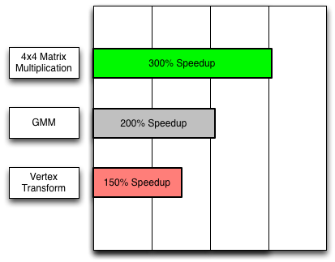
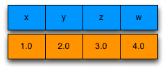
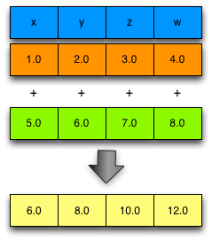
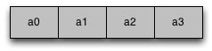
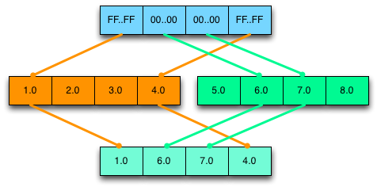

Using SIMD in Dart
Written by John McCutchan, August 2013
Programs written in Dart can use new numeric types that take advantage of Single Instruction Multiple Data (SIMD) instruction sets. By using the SIMD numeric type Float32x4, programs can operate on four floating-point numbers in parallel, providing a potential speedup of 400% for 3D graphics, image processing, audio processing, and other numeric computation algorithms.
This article tells you how to use the SIMD numeric types that the dart:typed_data library provides—Float32x4 and Int32x4. Both types hold four numbers together and operate on the four numbers simultaneously. Int32x4 is more limited; it’s useful for comparison, branching, and selection. Float32x4 offers the standard set of arithmetic operations and more.
Performance gains
Depending on the algorithms involved, SIMD instructions can speed up numeric computation 150% or more. As the figure shows, the greatest speedups tend to occur with 4x4 matrix multiplication.

3D graphics applications multiply 4x4 transformation matrices many times per frame. By using Float32x4 instead of double, you can speed up 4x4 matrix multiplication by over 300%. The following video features a skeletal animation demo in which the SIMD version of the animation has almost 400% the performance of the non-SIMD version.
Machine learning algorithms (such as automatic speech recognition) that use a Gauss Mixture Model (GMM) can also benefit from SIMD. Using Float32x4 instead of double doubled the speed of one GMM implementation.
Implementation status
As the next table shows, although all of your code can use dart:typed_data APIs such as Float32x4, your code might not be accelerated. When the types are not accelerated in the runtime environment, the performance is equivalent to or slower than the analogous scalar code.
| IA32/X64 | ARM | JavaScript | |
|---|---|---|---|
| Supported | Yes | Yes | Yes |
| Accelerated | Yes | If NEON present | Pending |
Thinking in SIMD
Imagine a SIMD value as having four lanes each containing a scalar value. The lanes are organized horizontally and named x, y, z, and w. Note that the w lane is the fourth lane.

Operations on SIMD values occur vertically, as the following figure shows. For example, the result of adding (1.0, 2.0, 3.0, 4.0) and (5.0, 6.0, 7.0, 8.0) is (6.0, 8.0, 10.0, 12.0).

Remember that all four of the additions happen in parallel.
Memory model
Despite the fact that a Float32x4 is organized as four lanes holding distinct floating-point values, you should not write programs that treat a Float32x4 as a list of floating-point numbers that can be read individually. Instead, think of a Float32x4 as an immutable object with operations that create new immutable Float32x4 objects.
Horizontal operations
Horizontal operations read or write the individual lane values inside a Float32x4 or Int32x4 value. Operating on these values horizontally—for example, adding the individual lane values together—is slow; avoid it. If you can’t avoid a horizontal operation entirely, adjust the code to perform the operation as few times as possible.
Uniform data
Because operations performed on SIMD values affect all four lanes, the data you store in a Float32x4 should be uniform—for example, the alpha value of four pixels. An example of non-uniform data would be the red, green, blue, and alpha values of a single pixel.
Consider an algorithm that alters the alpha channel of an image. Each pixel is represented as 4 floating-point values representing the red, green, blue, and alpha channels respectively. If the Float32x4 holds non-uniform data, as in the following diagram, then you cannot efficiently alter the alpha channel without altering the red, green, and blue channels as well.
Non-uniform data (bad!)
Contrast this with a Float32x4 holding uniform data from four pixels, as in the following diagram:
 Uniform data (good!)
A single operation can adjust the alpha channel without altering the red, green, or blue channels.
When a Float32x4 stores uniform data, you don’t have to treat a lane specially (which is slow). Organizing your data to be uniform is often easier said than done, but it can reap performance wins.
Types
The dart:typed_data library has four types to support SIMD: Float32x4, Int32x4, Float32x4List and Int32x4List.
Float32x4
Each lane in a Float32x4 holds a single-precision (32-bit) floating-point value. Most of the examples in this article use Float32x4. For a complete list of methods and constructors, see the Float32x4 API reference.
Int32x4
Each lane in a Int32x4 API reference holds an unsigned, 32-bit integer value. Int32x4 has no support for arithmetic. Instead, use it for logical operations such as comparison and selection.
You can get Int32x4 objects by explicitly creating them or, as the Branching section shows, from the return values of Float32x4 methods. To create an explicit selection mask, you can use the Int32x4.bool() constructor:
Int32x4.bool(bool x, bool y, bool z, bool w);
This constructor creates a new Int32x4 instance with 0xFFFFFFFF in lanes where the boolean parameter is true and 0x0 in lanes where the boolean parameter is false. For an example of using this constructor, see the Lane masking section.
The Int32x4 API reference has a complete list of methods and constructors.
Float32x4List
When you need a list of Float32x4 objects, use Float32x4List instead of List<Float32x4> whenever possible. See the Examples section for code that uses Float32x4List. For a complete list of methods and constructors, see the Float32x4List API reference.
Common techniques
This section shows code for some common tasks.
Performing arithmetic
Arithmetic on instances of Float32x4 is no different than arithmetic on double or integer numbers in Dart. Example:
var a = new Float32x4(1.0, 2.0, 3.0, 4.0); var b = new Float32x4(5.0, 6.0, 7.0, 8.0); var sum = a + b;
Reading the value of individual lanes
You can read individual lanes using the getters x, y, z, and w. For example:
double addXY(Float32x4 v) {
return v.x + v.y;
}
Writing the value of individual lanes
Remember that all instances of Float32x4 and Int32x4 are immutable, so you can’t change the value in a given lane. However you can construct a new instance using the lane values from an existing instance, while altering the value in one lane. For example:
Float32x4 v = ...; v = v.withX(x); // Change the value in the x lane of v.
Shuffling or re-ordering
You can shuffle the order of values stored in a Float32x4 instance without resorting to code that looks like this:
Float32x4 v = ...; double x = v.x; double y = v.y; double z = v.z; double w = v.w; Float32x4 v2 = new Float32x4(w, z, y, x); // Reverse the order of the values.
Instead, simply use one of the many fields that returns a new object with values in the specified order:
Float32x4 v2 = v.shuffle(Float32x4.WZYX); // Reverse the order of the values.
Not only is the code easier to read, but the performance is significantly better, too.
Branching
Take care when writing code that branches. Consider the following code snippet:
Float32x4 a = ...;
Float32x4 b = ...;
Float32x4 c;
if (a > b) {
c = a;
} else {
c = b;
}
It has a problem: What if only some lanes in a are greater than b, while the remaining lanes are not? Comparisons between two Float32x4 instances cannot be reduced down to a single boolean value. Because of this, Float32x4 does not support the standard comparison operators; instead it defines the following methods:
Int32x4 greaterThan(Float32x4 other); Int32x4 greaterThanOrEqual(Float32x4 other); Int32x4 lessThan(Float32x4 other); Int32x4 lessThanOrEqual(Float32x4 other); Int32x4 equal(Float32x4 other); Int32x4 notEqual(Float32x4 other);
Each method returns a Int32x4, where the lane values are 0xFFFFFFFF when the comparison is true and 0x0 when the comparison is false. This Int32x4 is called a selection mask and is used to select values from two Float32x4s, lane by lane. Here is the preceding code snippet rewritten for SIMD:
Float32x4 a = ...; Float32x4 b = ...; Int32x4 mask = a.greaterThan(b); // Create selection mask. Float32x4 c = mask.select(a, b); // Select.
The select() method is defined in the Int32x4 class as follows:
Float32x4 select(Float32x4 trueValue, Float32x4 falseValue);
If the mask has 0xFFFFFFFF in a lane, the result has the lane value from trueValue; if the mask has 0x0 in a lane, the result has the lane value from falseValue. The following diagram demonstrates a selection:

In general, programs that branch based on the values in a Float32x4 execute both the true path and the false path. They then merge the results by performing a select operation.
Masking lanes
Some algorithms compute updated values for some but not all of the lanes. Although you can’t operate on a fraction of the lanes of a Float32x4, you can create a custom selection mask. You can then use that mask to merge the updated lanes with the original value. For example:
// v = [2.0, 3.0, 4.0, 5.0] Float32x4 v = new Float32x4(2.0, 3.0, 4.0, 5.0); // mask = [0xFFFFFFFF, 0xFFFFFFFF, 0xFFFFFFFF, 0x0] Int32x4 mask = new Int32x4.bool(true, true, true, false); // r = [4.0, 9.0, 16.0, 25.0]. Float32x4 r = v * v; // v = [4.0, 9.0, 16.0, 5.0]. v = mask.select(r, v);
Examples
This section contains a few algorithms written to take advantage of SIMD.
Example #1: Average
This example computes the average of the individual floats stored in a Float32x4List. The loop computes a sum for the x, y, z, and w lanes. Outside of the loop, the four sub-sums are summed together, resulting in the true sum of the numbers.
double computeAverage(Float32x4List list) {
Float32x4 sum = new Float32x4.zero();
for (int i = 0; i < list.length; i++) {
sum += list[i];
}
// Perform horizontal operations once.
double average = sum.x + sum.y + sum.z + sum.w;
return average / (list.length*4);
}
Example #2: 4x4 matrix multiplication
This example multiplies two 4x4 matrices, A and B. The result of the multiplication is stored into R.
// R = A * B;
void multiplyMatrices(Float32x4List A, Float32x4List B, Float32x4List R) {
var a0 = A[0];
var a1 = A[1];
var a2 = A[2];
var a3 = A[3];
var b0 = B[0];
R[0] = b0.shuffle(Float32x4.XXXX) * a0 + b0.shuffle(Float32x4.YYYY) * a1 + b0.shuffle(Float32x4.ZZZZ) * a2 + b0.shuffle(Float32x4.WWWW) * a3;
var b1 = B[1];
R[1] = b1.shuffle(Float32x4.XXXX) * a0 + b1.shuffle(Float32x4.YYYY) * a1 + b1.shuffle(Float32x4.ZZZZ) * a2 + b1.shuffle(Float32x4.WWWW) * a3;
var b2 = B[2];
R[2] = b2.shuffle(Float32x4.XXXX) * a0 + b2.shuffle(Float32x4.YYYY) * a1 + b2.shuffle(Float32x4.ZZZZ) * a2 + b2.shuffle(Float32x4.WWWW) * a3;
var b3 = B[3];
R[3] = b3.shuffle(Float32x4.XXXX) * a0 + b3.shuffle(Float32x4.YYYY) * a1 + b3.shuffle(Float32x4.ZZZZ) * a2 + b3.shuffle(Float32x4.WWWW) * a3;
}
Example #3: Largest number
This example determines the largest floating point number in a Float32x4List. First, the loop determines the largest number in each lane. Then, outside of the loop, the largest of those 4 largest numbers is determined.
double findLargestNumber(Float32x4List list) {
Float32x4 largest = list[0];
for (int i = 1; i < list.length; i++) {
largest = largest.max(list[i]);
}
// Perform horizontal operations once.
double x = largest.x;
double y = largest.y;
double z = largest.z;
double w = largest.w;
double t0 = Math.max(x, y);
double t1 = Math.max(z, w);
return Math.max(t0, t1);
}
More information
For more details, check out these resources:
- API reference documentation for Float32x4, Int32x4, and Float32x4List
- Code that uses SIMD:
- Google I/O 2013 demo (spectre)
- vector_math, a library for 2D and 3D applications that relies on Float32x4 and Float32x4List
- My SIMD talk and slides from the February 2013 SFHTML5 meetup
- Numeric Computation, an article about number representations in Dart and how they affect performance